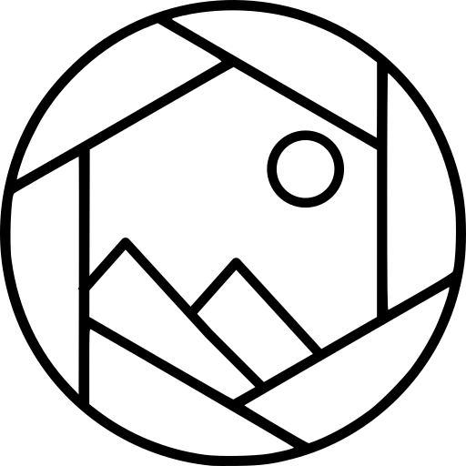

foto-org — photo organiser & de-duplicator
foto-org runs entirely on your own device. It never sends your photos or any personal information anywhere.
foto-org does not collect, transmit, or share any personal information. The application has no networking functionality and does not send any data off your device to us or to any third party.
To do its work, foto-org reads image files and their embedded metadata (such as EXIF camera details and, where present, GPS location) from folders you select. It stores thumbnails and file information in a local database on your own computer so results can be displayed and reloaded. All of this data remains on your device at all times and is never uploaded or transmitted.
foto-org never deletes or changes your original photos. When you organise photos into an archive, it only ever copies them into a destination folder you choose. Your source files are always left exactly as they were.
All file operations happen only on your own device, only in the folders you choose, and only when you start them yourself. When adding to an existing archive, photos already present are skipped so that only new photos are copied.
All data created by foto-org (thumbnails, metadata, and settings) is stored locally and can be removed at any time using the application's Reset function or by uninstalling the app.
For questions about this policy, please use the support contact listed on the foto-org page in the Microsoft Store.